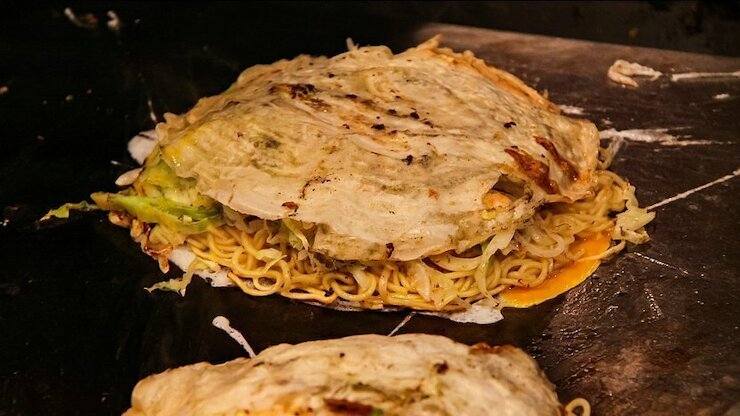

Hiroshima has a bustling downtown area, the main feature of which is Hondori Street, a pedestrian arcade that is closed to traffic and lined with shops and restaurants. It starts near the Peace Park and stretches east about half a kilometer. Running parallel to Hondori is Aioidori (Aioi Street), the main street used by cars and trams. Along Aioi Street stand a few large department stores where more shopping can be found.
While in the downtown area, visitors to Hiroshima may want to take the opportunity to try Hiroshima's most famous specialty: Hiroshima-style okonomiyaki. Many restaurants along both Hondori and Aioi streets offer the local specialty, but the surest place to find it is in Okonomimura.
Usually translated as Okonomiyaki Village, Okonomimura is a small area just south of the eastern end of Hondori. As its name implies, it is devoted to okonomiyaki. Okonomimura has many different restaurants to choose from and is a convenient place in the downtown area to take a break and grab a bite.
